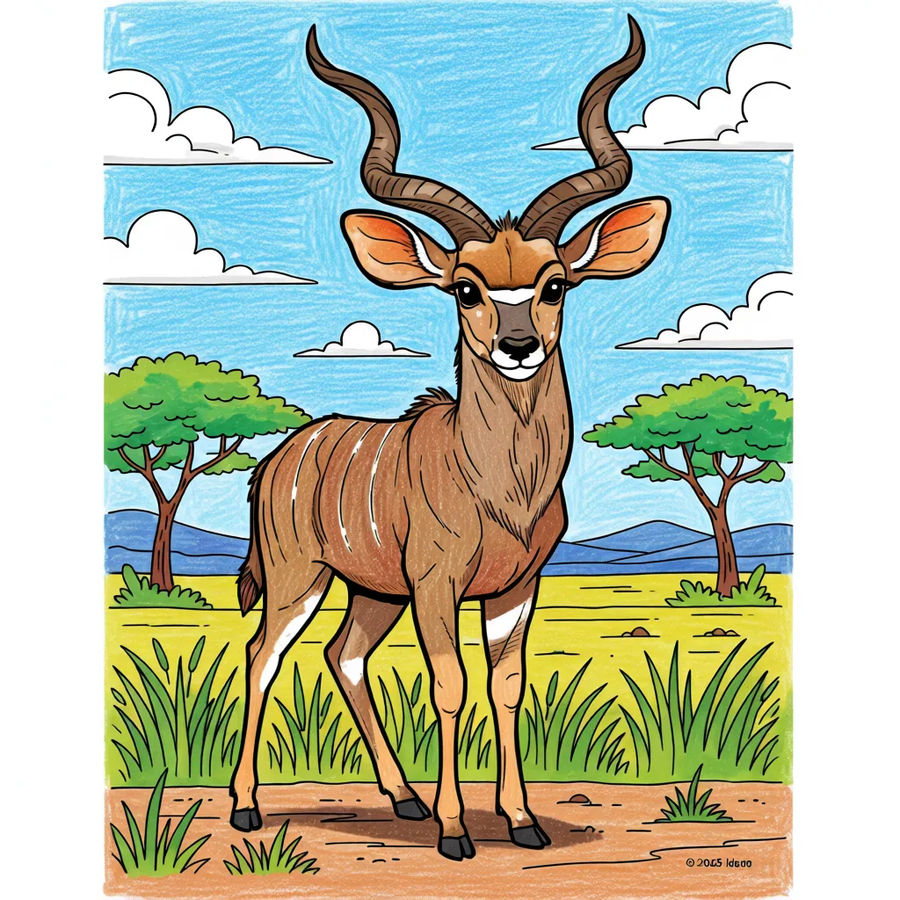

Greater Kudu
Tragelaphus strepsiceros

Key Characteristics
- The Greater Kudu is a majestic antelope known for its stunning, long, spiraled horns.
- The males' horns can grow up to 6 feet long, making two and a half turns!
- Kudus have large ears that help them hear the faintest sounds of predators nearby."
Peculiar Facts (Fun Facts!)
- Kudus are excellent jumpers and can leap over obstacles that are 8 feet high!
- Their coat has thin white stripes that help them blend into the dappled shade of the trees, making them hard to spot.
- When they get spooked, they let out a loud, deep bark that sounds similar to a dog.